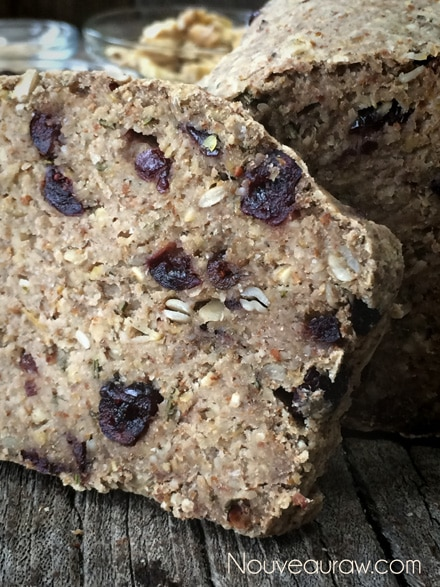
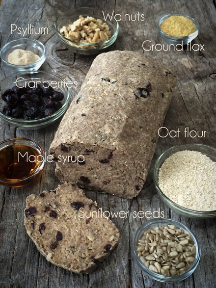

Rosemary Coastal Bread

~ raw, vegan, gluten-free ~
This here bread is sweet, savory, and hardy… not only is it a solid textured loaf that is appropriate for sandwiches and spreads, but it is utterly delicious all on its own. I purposely left larger nuggets of sunflower seeds in the bread to give it nice seedy crunch to balance the delightful chew of the dried cranberries. Clearly, you can use other seeds, nuts or dried fruit.. but why mess with perfection?!
Not only do I love the texture of this bread, but I love the flavors. As I mentioned from the get-go… sweet and savory. The sweet (and slight tartness) of the cranberries play well with the savory hint of rosemary.
I remember moving into a house that had some deferred yard maintenance. It was beautiful; it just needed some overdue weeding and tender loving care. The weeds were taking over, so I spent a reasonable amount of time just pulling and yanking them from the front yard.
A few days later, I ran into the previous owner of the house. Midway through our conversation, she asked if I was enjoying the rosemary. “Rosemary?” I questioned. With much excitement, she said, “Why yes! There are huge rosemary plants all around the base of the trees in the front yard.”
Inwardly, my head hung low; my heart sank, my cheeks began to pinken, my throat grew dry as though a cotton ball had taken up residence… her cell phone rang and snapped me out of my inward trance of thoughts and shame, smiling she said she had to run. Thank goodness! I didn’t have the heart to tell her that I had ripped all those darn” weeds” out of the yard! Oy-Vey! All I can say is that the whole time I was digging them up, I kept saying to myself, “Dang these weeds smell good.” lol
My Raw Rosemary and Cranberry “Cream Cheese” Spread tastes fantastic on this bread if you are looking for ideas. Enjoy.
Ingredients:
yields 1 loaf
Almond milk sludge:
- 1 1/4 cups water
- 3/4 cup raw almonds, soaked
Add-ins:
Preparation:
- In the food processor, fitted with the “S” blade, break down the walnuts to a small crumble.
- Add the oat flour, sunflower seeds, flax, psyllium, black pepper, and celery salt. Pulse to combine.
- In a blender, combine the water and almonds, blending until it is creamy smooth. Add to a food processor.
- Now add the almond pulp, cider vinegar, maple syrup, and rosemary. Process until well mixed.
- You may need to stop the machine a few times and scrape the sides down.
- Place in a bowl and add the cranberries and sunflower seeds. Mix well.
- The batter should be very thick.
- Let it rest for 15 minutes so the flax and psyllium can activate as a binding agent.
- Shape the dough into a loaf shape and place it on the mesh sheet that comes with the dehydrator. Dry at 145 degrees (F) for 1 -2 hours
- Slice the bread into 1″ slices (or thicker, depends on preference) and lay on the mesh sheet.
- Continue to dry for another 6-10 hours at 115 degrees or until semi-moist.
- Keep an eye on it, so it doesn’t dry out. Dry time will always vary.
- Store in the fridge for 3-5 days or in the freezer for 1 month or so.
- I did a test to see how long the bread would last, uncovered, on the counter. I placed 3 pieces on a small plate and walked away. I came back to it a week later; one piece was missing… Bob ate it. A few days later, I check the bread to see yet another piece gone… Bob ate it. Two weeks into my experiment, I returned to my….. “Where’s my bread!”… You guessed it; Bob ate it! So off I went hunting down my husband. I asked him how the bread turned out after two weeks. He said that it tasted great; it was just very hard. So there you go. haha
The Institute of Culinary Ingredients™
- To learn more about maple syrup by clicking (here).
- What is Himalayan pink salt, and does it matter? Click (here) to read more about it.
- Learn how to grind your own flaxseeds for ultimate freshness and nutrition. Click (here).
- Are oats gluten-free? Click (here) to learn more.
- Are oats raw? Yes, they can be found. Click (here) to learn more.
Culinary Explanations:
- Why do I start the dehydrator at 145 degrees (F)? Click (here) to learn the reason behind this.
- When working with fresh ingredients, it is essential to taste test as you build a recipe. Learn why (here).
- Don’t own a dehydrator? Learn how to use your oven (here). I do, however honestly believe that it is a worthwhile investment. Click (here) to learn what I use.


This bread tastes wonderful with my Raw Blueberry Grape Thyme Jam.

© AmieSue.com